Week 3 — Metals, surfaces, redox, and treatment
In August 2015, a clean-up crew at the abandoned Gold King Mine in Colorado accidentally released about 3 million gallons (roughly 11 000 m³) of acidic, metal-rich mine water. The Animas River turned orange for many kilometres. Within days the colour had moved downstream and faded.
The water looked clean again. But where had the metals gone?
Today you will learn to:
Last lecture: iron and aluminium hydrolyse and precipitate. Today: what their solids do.
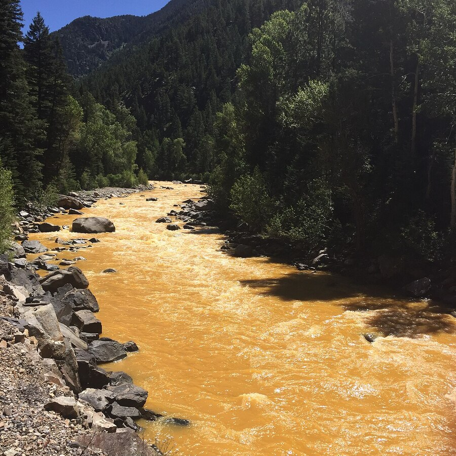
The Animas River between Silverton and Durango, within a day of the Gold King Mine release, August 2015. Photo: Riverhugger, CC BY-SA 4.0, Wikimedia Commons.After the plume passed, dissolved metal concentrations at Durango fell back towards earlier levels within days to weeks.
Much of the metal load had travelled attached to iron oxyhydroxide particles. Many of those particles settled on the river bed and in reservoirs downstream.
So a water sample can look clean while the system still holds the metal.
Question for this lecture: when a contaminant leaves the water, has it been removed, or has it only moved onto a surface that may move again?
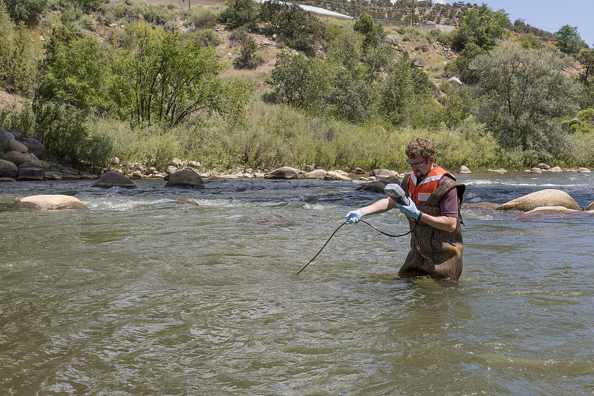
Water monitoring in the Animas River at Durango, Colorado, 14 August 2015. Photo: Eric Vance, US EPA, public domain, Wikimedia Commons.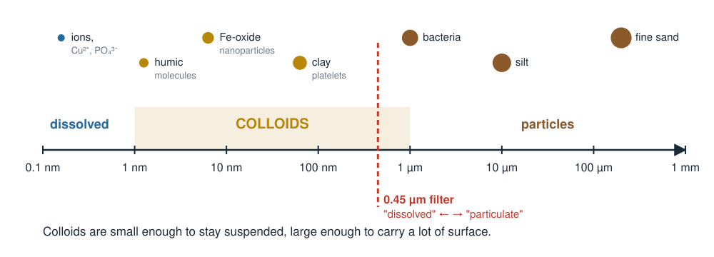
There is no sharp line between dissolved and particulate. Colloids, about 1 nm to 1 µm across, stay suspended for a long time. A 0.45 µm filter cuts through the colloid range, so “dissolved” includes some colloids and “particulate” includes others.
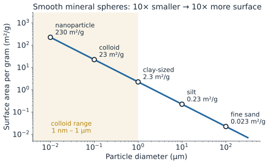
For a sphere, the surface per gram scales as 1/diameter. A gram of 10 nm particles has about 10 000 times the surface of a gram of fine sand. Fresh iron oxyhydroxides are made of such tiny crystals, so a few grams carry hundreds of square metres of reactive surface.
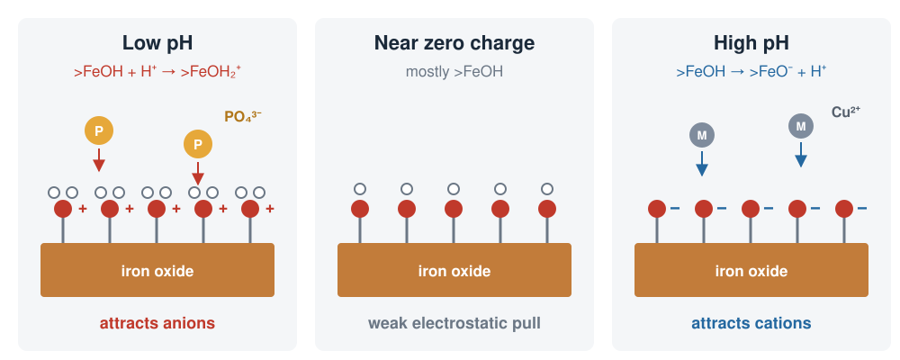
\mathrm{>SOH+H^+\rightleftharpoons>SOH_2^+}\qquad\mathrm{>SOH\rightleftharpoons>SO^-+H^+}
Here >S means a surface metal atom, such as Fe at the edge of an oxide. At low pH the surface is positive; at high pH it is negative.
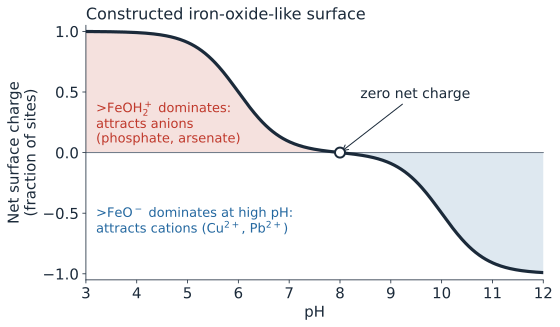
At one pH the positive and negative sites balance: the point of zero charge. For iron oxides it typically lies roughly between pH 7 and 9.
Most natural waters sit near or below this pH, so iron oxides are good at holding phosphate.
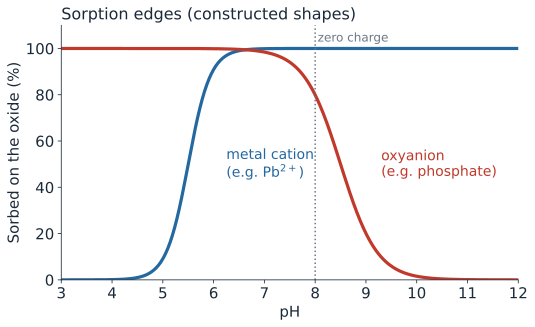
Metal cations bind more as pH rises; oxyanions bind more as pH falls. Each change happens over one or two pH units, a sorption edge. Acid can therefore release metals from oxides, while rising pH can release phosphate.
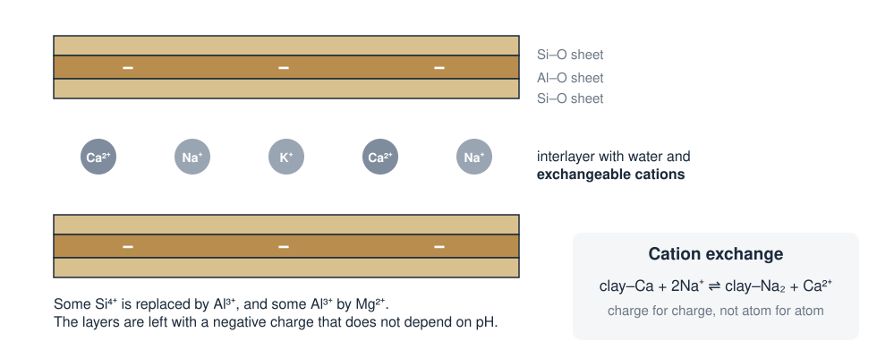
In clay minerals, some Si⁴⁺ and Al³⁺ in the crystal is replaced by ions of lower charge. The layers keep a negative charge that does not depend on pH. It is balanced by cations such as Ca²⁺, Na⁺ and K⁺, which can be exchanged for others.
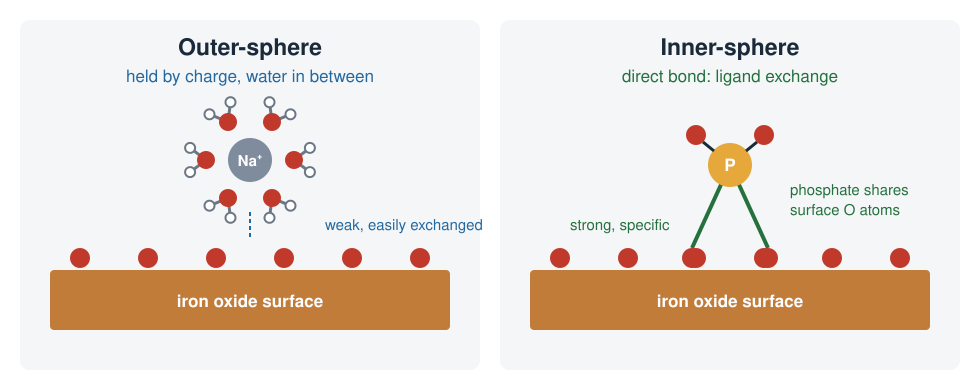
Outer-sphere ions keep their water shell and are held by charge alone; they exchange easily. Inner-sphere complexes form a direct bond with surface oxygen, by ligand exchange. They are much stronger and can form even on a surface of the same charge.
For low concentrations, sorbed and dissolved amounts are often roughly proportional:
q=K_d\,C_w
Kd belongs to one system: this solute, this solid, this water, this pH. It is not a molecular constant.
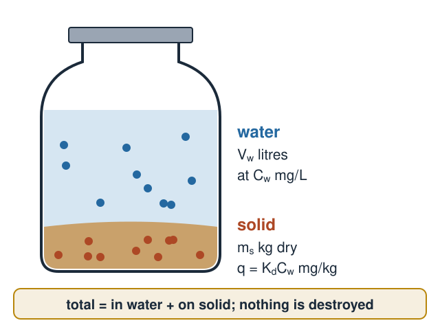
In a closed bottle, all the solute is either in water or on solid:
M_T=C_wV_w+q\,m_s=C_w(V_w+K_dm_s)
C_w=\frac{M_T}{V_w+K_dm_s}
Both terms in the denominator are in litres. Kdms acts like an extra volume the solute can spread into. The sorbed fraction is Kdms/(Vw + Kdms).
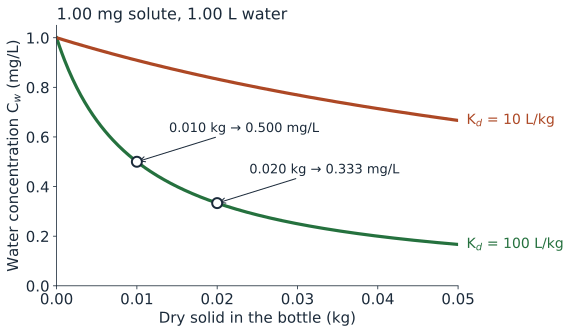
1.00 mg solute, 1.00 L water, 0.0100 kg dry solid, Kd = 100 L/kg.
Double the solid: Cw = 1/3.00 = 0.333 mg/L, solid 0.667 mg.
pH change lowers Kd to 10: Cw = 1/1.10 = 0.909 mg/L. Desorption, with no new solute added.
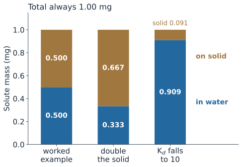
Use the two-phase balance and the surface-charge picture.
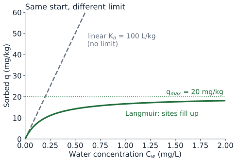
A linear Kd has no limit. Real surfaces have a finite number of sites. The Langmuir model levels off at a capacity qmax:
q=\frac{q_{max}\,b\,C_w}{1+b\,C_w}
Example: qmax = 20.0 mg/kg on 0.0100 kg of solid gives at most 0.200 mg sorbed. That solid cannot hold 1.00 mg, whatever Kd says.
Other solutes compete for the same sites: phosphate and arsenate, for example.
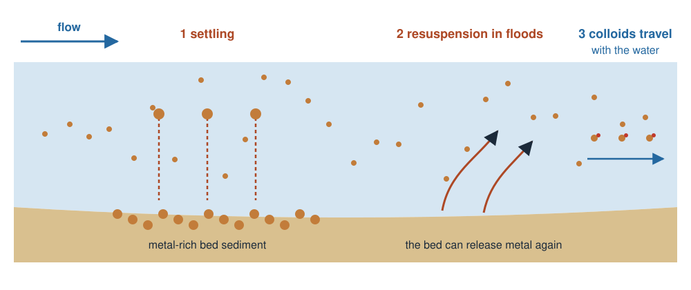
Sorption moves a contaminant from water to a solid. What happens next depends on the solid. Particles that settle can retain metal in the bed. Floods can stir the bed up again. Colloids stay suspended and can carry sorbed metal far downstream.
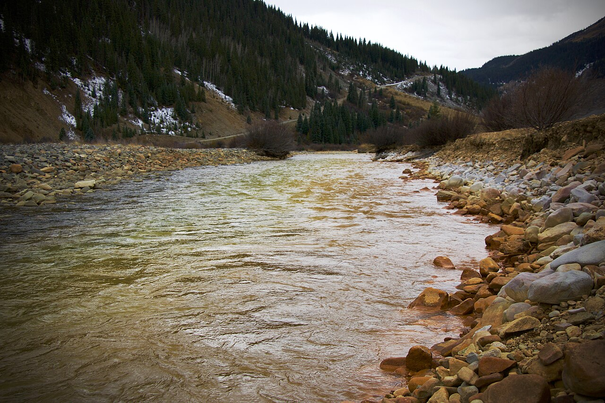
Where Cement Creek joins the Animas River, November 2015. The stones are coated with orange iron oxyhydroxide. Photo: US EPA, public domain, Wikimedia Commons.Now we can answer the opening question.
This creek carried mine drainage long before 2015. The spill was a sudden pulse in a chronic problem.
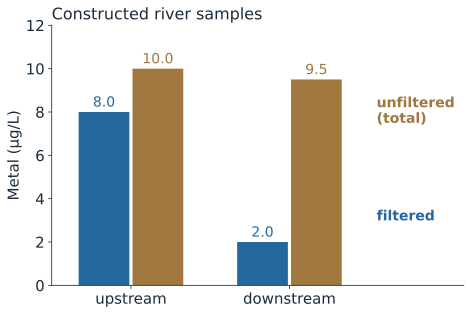
Constructed data: downstream, the filtered metal falls from 8.0 to 2.0 µg/L, but the unfiltered total hardly changes.
The metal did not vanish. It moved onto particles that the filter held back, while they still travel with the river.
To decide between retention and transport, measure:
| Concept | Key fact |
|---|---|
| Colloids | about 1 nm–1 µm; the 0.45 µm filter cuts through them |
| Surface area | per gram scales as 1/diameter; fine particles dominate binding |
| Oxide surfaces | >SOH gains or loses H⁺; positive at low pH, negative at high pH |
| Zero charge | iron oxides roughly pH 7–9; attract anions below, cations above |
| Sorption edges | cations bind more as pH rises; oxyanions as pH falls |
| Clays | permanent negative charge; exchangeable cations |
| Inner-sphere | direct bond by ligand exchange; strong and specific |
| Distribution coefficient | q = KdCw (L/kg); valid for one system |
| Two-phase balance | Cw = MT/(Vw + Kdms); total conserved |
| Capacity | sites are finite: at most qmax × ms |
| Transport | settling retains, floods resuspend, colloids carry |
Next: Redox and environmental cycles. What happens to iron oxides, and the phosphate they hold, when oxygen runs out? Then the exercises and the notes.
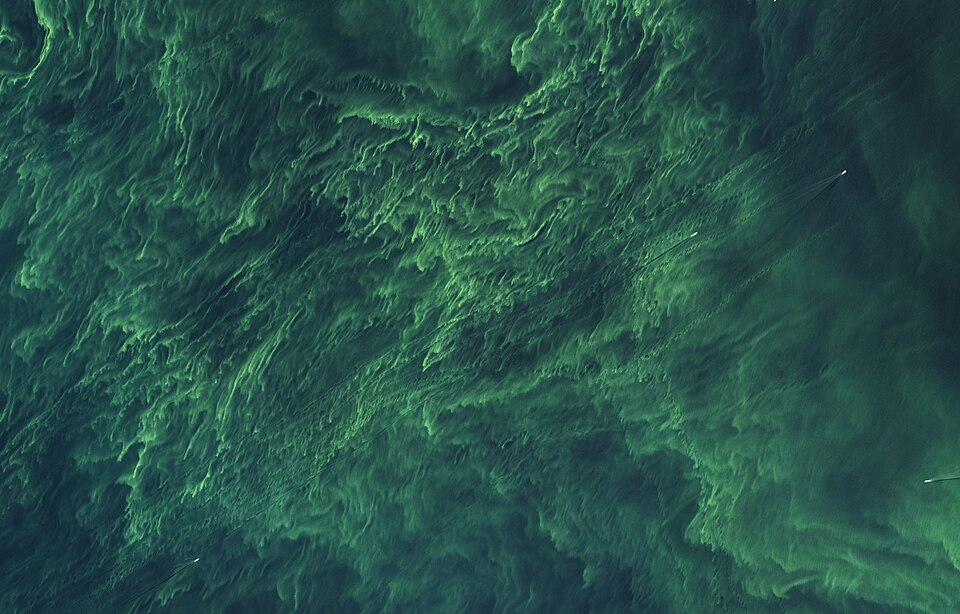
Phytoplankton bloom swirling in the Baltic Sea, July 2025, seen by a Landsat satellite. Image: NASA Earth Observatory (Michala Garrison), public domain, Wikimedia Commons.